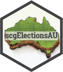

scgElectionsAU 
Overview
scgElectionsAU is an R package providing comprehensive data and tools for analysing Australia’s federal election results from 2001 to 2022. It offers a unique insight into the dynamics of the electoral process in Australia, presented through a variety of datasets and functions.
Datasets Included:
-
X: Data description.
Installation
To install the development version of scgElectionsAU, use:
# Install the development version from GitHub
devtools::install_github("sarahcgall/scgElectionsAU")Usage
scgElectionsAU includes several helper functions to enhance data analysis:
Example usage:
library(scgElectionsAU)
# Load a dataset
df <- scgUtils::get_data("majority")Explore detailed examples and dataset descriptions in the package documentation.
Data Sources and Disclaimer
Data Sources
The datasets in the scgElectionsAU package are meticulously curated from the official results sourced from the Australian Electoral Commission. These datasets offer a comprehensive view of Australia’s electoral outcomes and are crucial for in-depth analysis and research in political science, electoral studies, and related fields.
Disclaimer
While the utmost care has been taken to ensure the accuracy and reliability of the data, the Australian Electoral Commission was not involved in the development of this package and thus does not bear responsibility for any errors or omissions in the datasets. Users of scgElectionsAU should note that the package’s creators have independently compiled, processed, and presented the data. Any discrepancies or inaccuracies found within the datasets do not reflect on the official records maintained by the Electoral Commission.
Future Additions and Updates
Planned future additions include by-election and referendum results and enhanced datasets like results_by_booths. Upcoming functional updates will focus on visualising election results specific to Australia and making boundary adjustments for better comparative analysis.
Feedback and Contributions
Suggestions and contributions are welcome. For any proposed additions, amendments, or feedback, please create an issue.
Related Packages
Check out scgUtils for additional functions and visualisation tools.